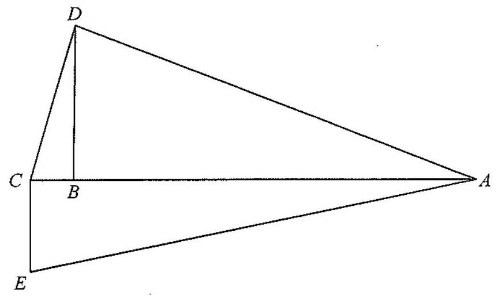

平面幾何 · 1 分題

$BC^{2}+BD^{2}=25+144=169=CD^{2}$，故 $\angle CBD=90^{\circ}$，從而 $\angle ABD=90^{\circ}$（$A$、$B$、$C$ 共線）。
$AB=\sqrt{37^{2}-12^{2}}=\sqrt{1225}=35$，故 $AC=5+35=40$。
$AE=\sqrt{40^{2}+9^{2}}=\sqrt{1681}=41$。
周界 $=37+13+9+41=100$ cm，故選 C。